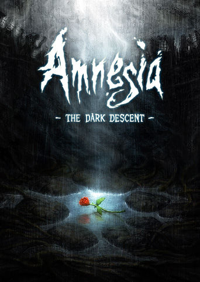

Among the Sleep (2014) IMBd Rating: 6.6/10 ING Rating: 7.3/10 A first-person survival horror action-adventure game interested in the nature of trauma. With the help of his teddy bear, you play as a toddler that tries to escape a nightmarish landscape while being pursued by dark forces. PLATFORMS:
PlayStation 4, Nintendo Switch, Xbox One, Microsoft Windows, macOS, and Macintosh operating systems

Amnesia: The Dark Descent (2010) IMDb Rating: 8.2/10 ING Rating: 8.5/10 A first person survival horror game about immersion, discovery, and living through a nightmare. A young man, Daniel, awakes is a dreary castle with no memory of his past and discovers that he diliberately erased his memory and must travel through the dark halls to kill the evil baron Alexander. PLATFORMS: PlayStaion 4, Nintendo Switch, Xbox One, Microsoft Windows, and macOS
Bendy and the Ink Machine (2017) IMBd Rating: 7.4/10 ING Rating: N/A An episodic first person puzzle action horror game that begins in the far days past of animation and ends in a very dark future. Henry, a former traditional animator, gets a strange note from a friend that invited him to his old workplace. Henry finds the place abandoned and discover a mysterious ink machine creating all sorts of abonimations. PLATFORMS: PlayStation 4, Xbox One, Nintendo Switch, Microsoft Windows, Macintosh operating systems, and macOS